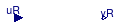

Package to call Python functions
Information
This package contains blocks and functions that embed Python 2.7 in Modelica.
Data can be sent to Python functions and received from Python functions.
This allows for example data analysis in Python as part of a Modelica model,
or data exchange as part of a hardware-in-the-loop simulation in which
Python is used to communicate with hardware.
See
Buildings.Utilities.IO.Python27.UsersGuide
for instruction.
Extends from Modelica.Icons.VariantsPackage (Icon for package containing variants).
Package Content
| Name |
Description |
| UsersGuide
|
User's Guide |
| Real_Real
|
Block that exchanges a vector of real values with a Python function |
 Functions Functions
|
Package with functions that call Python |
 Examples Examples
|
Collection of models that illustrate model use and test models |
Block that exchanges a vector of real values with a Python function

Information
Block that exchanges data with a Python function.
For each element in the input vector uR[nDblWri],
the value of the flag flaDblWri[nDblWri] determines whether
the current value, the average over the sampling interval or the integral
over the sampling interval is sent to Python. The following three options are allowed:
|
flaDblWri[i]
|
Value sent to Python
|
|
0
|
Current value of uR[i]
|
|
1
|
Average value of uR[i] over the sampling interval
|
|
2
|
Integral of uR[i] over the sampling interval
|
Extends from Modelica.Blocks.Interfaces.DiscreteBlock (Base class of discrete control blocks).
Parameters
| Type | Name | Default | Description |
|---|
| Time | samplePeriod | | Sample period of component [s] |
| Time | startTime | 0 | First sample time instant [s] |
| String | moduleName | | Name of the python module that contains the function |
| String | functionName | moduleName | Name of the python function |
| Integer | nDblWri | | Number of double values to write to Python |
| Integer | nDblRea | | Number of double values to be read from the Python |
| Integer | flaDblWri[nDblWri] | zeros(nDblWri) | Flag for double values (0: use current value, 1: use average over interval, 2: use integral over interval) |
Connectors
| Type | Name | Description |
|---|
| input RealInput | uR[nDblWri] | Real inputs to be sent to Python |
| output RealOutput | yR[nDblRea] | Real outputs received from Python |
Modelica definition
model Real_Real
"Block that exchanges a vector of real values with a Python function"
extends Modelica.Blocks.Interfaces.DiscreteBlock(startTime=0);
parameter String moduleName
"Name of the python module that contains the function";
parameter String functionName=moduleName
"Name of the python function";
parameter Integer nDblWri(min=1)
"Number of double values to write to Python";
parameter Integer nDblRea(min=1)
"Number of double values to be read from the Python";
parameter Integer flaDblWri[nDblWri] =
zeros(nDblWri)
"Flag for double values (0: use current value, 1: use average over interval, 2: use integral over interval)";
Modelica.Blocks.Interfaces.RealInput uR[nDblWri]
"Real inputs to be sent to Python";
Modelica.Blocks.Interfaces.RealOutput yR[nDblRea]
"Real outputs received from Python";
Real uRInt[nDblWri]
"Value of integral";
Real uRIntPre[nDblWri]
"Value of integral at previous sampling instance";
public
Real uRWri[nDblWri]
"Value to be sent to Python";
initial equation
uRWri =
pre(uR);
uRInt =
zeros(nDblWri);
uRIntPre =
zeros(nDblWri);
for i
in 1:nDblWri
loop
assert(flaDblWri[i]>=0
and flaDblWri[i]<=2,
"Parameter flaDblWri out of range for " +
String(i) + "-th component.");
end for;
// The assignment of yR avoids the warning
// "initial conditions for variables of type Real are not fully specified".
// At startTime, the sampleTrigger is true and hence this value will
// be overwritten.
yR =
zeros(nDblRea);
equation
for i
in 1:nDblWri
loop
der(uRInt[i]) =
if (flaDblWri[i] > 0)
then uR[i]
else 0;
end for;
when {sampleTrigger}
then
// Compute value that will be sent to Python
for i
in 1:nDblWri
loop
if (flaDblWri[i] == 0)
then
uRWri[i] =
pre(uR[i]);
// Send the current value.
else
uRWri[i] = uRInt[i] -
pre(uRIntPre[i]);
// Integral over the sampling interval
if (flaDblWri[i] == 1)
then
uRWri[i] = uRWri[i]/samplePeriod;
// Average value over the sampling interval
end if;
end if;
end for;
// Exchange data
yR =
Buildings.Utilities.IO.Python27.Functions.exchange(
moduleName=moduleName,
functionName=functionName,
dblWri=uRWri,
intWri={0},
nDblWri=nDblWri,
nDblRea=nDblRea,
nIntWri=0,
nIntRea=0,
nStrWri=0,
strWri={""});
// Store current value of integral
uRIntPre= uRInt;
end when;
end Real_Real;
Automatically generated Mon Jul 13 14:30:45 2015.